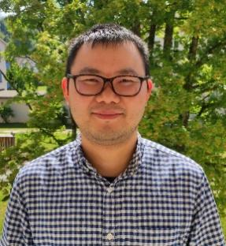

欢迎来到唐高民的量子输运课题组
Quantum Transport Group at GSCAEP



唐高民（Gaomin Tang） 副研究员
入选国家级青年人才项目
工作单位:中国工程物理研究院研究生院
教育和工作经历
2022.11--现在，中物院研究生院，副研究员
2022.06--2022.11，香港科技大学，访问学者
2019.03--2022.04，巴塞尔大学，博士后
2018.02--2019.02，新加坡国立大学，博士后
2016.09--2018.02，香港大学，博士后
2012.09--2016.09，香港大学，博士
2008.09--2012.07，电子科技大学，学士
联系方式
办公地点：北京市海淀区西北旺东路10号院东区9号楼 C513
电话：（010）5698 1865
邮箱：gmtang@gscaep.ac.cn
Google Scholar
Research Areas
quantum transport, superconductivity, nanophotonics and thermal radiation, open quantum systems